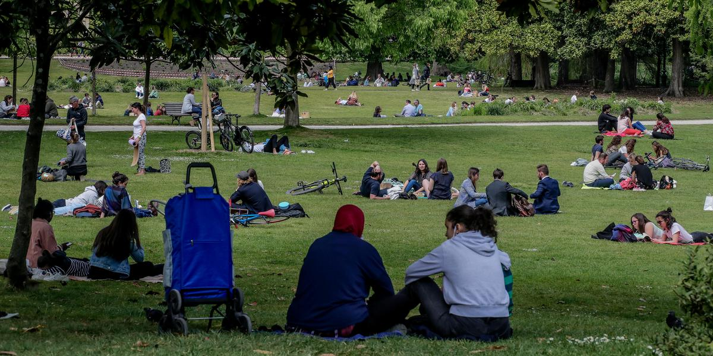
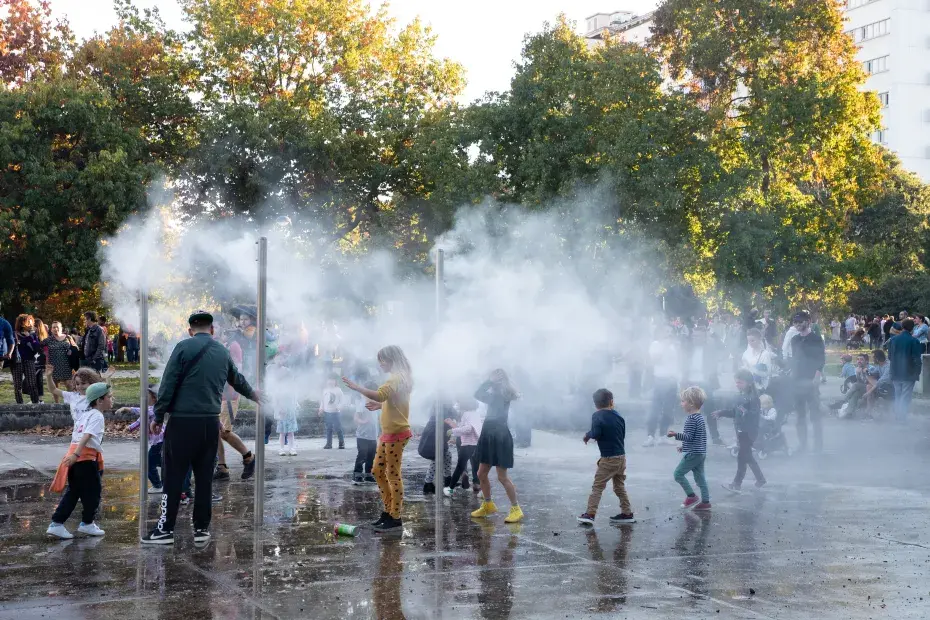
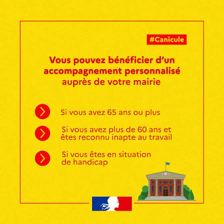

Chronique d'une canicule à deux vitesses. Dans quelle mesure l'épisode caniculaire de juin impacte-t-il Bordeaux et ses habitants ? Fait-il si chaud pour tout le monde ? Et qui sont les premiers touchés ?
"On va faire un chèque-chaleur aussi ? Une aide pour acheter des bouteilles d'eau ? Une aide pour acheter la petite serviette fraîche que tu vas te mettre sur la nuque ? Tout ce blabla pour deux semaines de chaleur dans l'année… En Espagne, en Italie, comment font-ils ? Toute votre réflexion, c'est l'assistanat permanent. Il fait chaud, basta ! Je trouve les débats autour de la chaleur complètement délirants. Tu mets un t-shirt, t'arrêtes de chouiner. En hiver il fait trop froid, en été il fait trop chaud… ça suffit"
Daniel Riolo · RMC · 27 mai 2026Voici une citation de Daniel Riolo qui date du 27 mai 2026, sur RMC, dans le cadre d'un débat sur les canicules que nous avons vécues ces deux derniers mois. Nous pourrions dire que cela va dans la continuité des idéaux politiques du personnage que l'on connaît bien et d'un média orienté à droite… Mais encore faudrait-il aussi aller voir de l'autre côté de la scène politico-médiatique, chez Quotidien. Où ici aussi, à nouveau, un chroniqueur privilégié s'est permis de parler au nom de tous, et s'est cru en position d'étaler son mépris sans gêne, avec une légèreté condescendante, j'ai nommé… Yann Barthès !
« Comme on le disait hier, tout le monde a chaud. Bon, c'est rare d'ailleurs de vivre un événement universel, on est tous logés à la même enseigne. Si vous croisez Bernard Arnault, il aura chaud. Un ministre, il aura chaud, il aura aussi chaud que vous ou que votre voisin du dessus ou du dessous. Il y a ceux qui vivent sous les toits. Ils se sentent autorisés à parler plus fort car "j'habite sous les toits". Tout le monde s'en fout ! »
Yann Barthès · Quotidien · TMC · 23 juin 2026Laissez-nous vous répondre messieurs : oui, tous les Français ont chaud durant cette canicule. Mais tous n'ont pas la possibilité de travailler sur un plateau climatisé, d'avoir un appartement assez isolé pour conserver la fraîcheur, d'être véhiculés ou de payer l'essence pour aller à la plage. Ne serait-ce que d'avoir une clim.
Des millions de Français souffrent de chaleur physique, et la seule réponse que vous leur offrez, c'est votre froideur sociale. Ces deux séquences ne sont pas des dérapages isolés. C'est du mépris de classe ordinaire, décomplexé, en prime time. L'ignorance de ceux qui n'ont jamais eu à choisir entre dormir et respirer, et qui parlent au nom de ceux qui n'ont pas le micro. Et la chaleur n'est qu'un exemple parmi d'autres : se loger, se soigner, se déplacer, se nourrir — dans tous les domaines, la France ne vit pas à la même enseigne, contrairement à ce qu'on nous répète. La canicule ne crée pas les inégalités, elle les révèle : dans une même ville, à la même heure, sous le même soleil, on ne vit pas la même chose.
Alors comme ça, tous les Français ont chaud de la même manière ? Nous sommes allés voir.
Bordeaux n'a pas attendu l'été pour suffoquer. Dès le 27 mai, la Gironde bascule en vigilance orange. 36°C la journée, des nuits à 21°C. Du jamais vu pour un mois de mai depuis le XIXe siècle.
Après trois semaines de répit, place au mois de juin, rebelote, en pire. Le 17 juin, la vigilance canicule est réactivée. Cette fois, ça monte vite, ça monte haut, et ça dure. Vigilance orange le 20, rouge le 21. Les nuits ne descendent plus sous les 22°C. Le 23 juin, le thermomètre de Bordeaux-Mérignac affiche 42,5°C. Record absolu, tous mois confondus, depuis que les mesures existent.
Dix jours de fournaise, et trois personnes décédées à domicile, dans la métropole, en plein épisode. Des décès attribués à la canicule par la préfecture, même si le maire de Cenon, où vivait l'une des victimes, nuance : "Est-ce vraiment consécutif à la chaleur ? Rien ne le dit." Une prudence compréhensible. Mais trois personnes âgées, mortes chez elles, pendant les jours les plus chauds jamais enregistrés à Bordeaux, ça ne ressemble pas à une coïncidence.
Long, chaud, fréquent, voilà le résumé de ce début d'été.
Et ce n'est pas une anomalie : selon Météo-France, le nombre de jours de vagues de chaleur sera multiplié par cinq d'ici 2050. Il va falloir s'y habituer. Ou s'y préparer.
Le 23 juin, jour du record, le réseau TBM s'effondre : 213 bus arrêtés sur 312, 32 rames de tram sur 84. L'explication officielle vaut le détour : les climatisations ont été "impactées au-delà de leurs limites de fonctionnement". Traduction — il faisait trop chaud pour les machines censées nous protéger de la chaleur. On appréciera l'ironie.
Le lendemain, une rame sur deux seulement. La SNCF arrête tous les TER de la région entre 10h et 18h. Et pour ne rien arranger, le même jour démarraient les travaux du pont de pierre — lignes A et E coupées pour deux mois.
Résultat : au moment précis où les habitants avaient le plus besoin de se déplacer, d'aller au frais, de rejoindre un parc ou un proche, le réseau lâchait. Des quais de tram en plein soleil, des attentes interminables sous 40°C, des bus anciens sans clim — juste des "rafraîchisseurs d'air", précise TBM.

Ceux qui ont une voiture climatisée n'ont rien vu de tout ça. Les autres, ceux qui dépendent du tram ou du bus pour tout, ont attendu. Debout. En plein soleil.
Une métropole à deux vitesses, jusque dans ses transports.
400 gourdes distribuées à la halte Stalingrad. Des brumisateurs installés dans l'espace public. Les parcs ouverts plus tard le soir. Une plateforme téléphonique pour les seniors, un registre municipal, des appels hebdomadaires aux personnes âgées isolées. Les événements en plein air interdits pendant la vigilance rouge, les chantiers BTP autorisés à démarrer une heure plus tôt.

Pour une métropole de près d'un million d'habitants.
Voilà ce que la ville a fait. Ce n'est pas rien. Mais mettons ça en perspective : 400 gourdes pour une métropole de près d'un million d'habitants. Des brumisateurs quand ce sont des arbres qu'il faudrait. Un numéro vert quand ce sont des logements isolés qui manquent.

Et surtout, il y a ce détail qui résume tout : la ville a ouvert les parcs plus tard le soir, pour que les gens puissent aller au frais. Sauf que le même jour, le tram pour y aller ne circulait plus qu'une fois sur deux. Un point important à comprendre : la mairie et la métropole ne sont pas deux entités séparées. Thomas Cazenave est maire de Bordeaux depuis le 22 mars, et président de Bordeaux Métropole depuis le 24 avril. TBM, c'est la Métropole. C'est donc lui. D'un côté on ouvre les parcs, de l'autre on n'arrive pas à y amener les gens. Le premier point de son projet de mandature s'appelle pourtant "fluidifier les déplacements".
On soigne le symptôme, jamais la cause. Et pendant ce temps, trois personnes sont mortes chez elles.
Pour comprendre la situation bordelaise, comparons avec d'autres villes, pendant cette même canicule de fin juin. Paris a ouvert l'ensemble de ses parcs et jardins 24h/24. Versailles a fait de même avec ses 52 espaces verts, accessibles jour et nuit. Une solution simple pour les appartements en fournaise, quand il fait encore presque 30°C à minuit : un parc ouvert devient le seul endroit où respirer. Surtout pour les plus précaires, les logements mal isolés, les sans-abri qui n'ont aucun autre moyen de se rafraîchir.
À Bordeaux ? Le Jardin public ferme à 23h, les autres parcs encore plus tôt. Rien la nuit. Alors que c'est justement la nuit, quand le corps épuisé ne récupère plus, que la canicule devient mortelle.
Soyons justes, la ville n'est pas restée les bras croisés : espace de répit au centre Jean-Moulin avec la Croix-Rouge, maraudes renforcées, eau distribuée à la halte Stalingrad. Des mesures utiles. Mais toutes s'arrêtent au coucher du soleil, au moment précis où d'autres villes, elles, prolongent l'accès à la fraîcheur.
Bordeaux veut se ranger parmi les vitrines écologiques de la France, et avec de bons arguments : 57 000 arbres plantés en six ans, patrimoine arboré doublé, deuxième ville cyclable de France. Un bilan réel. Mais l'arbre qu'on plante aujourd'hui ne fait pas d'ombre avant vingt ans — il ne protège pas le sans-abri de ce soir. À force de planter pour le chiffre, pour se constituer un bilan à brandir en campagne, on oublie l'urgence. Sous 42°C, ce ne sont pas des pousses d'arbres qui sauvent les Bordelais dans l'instant.
Quand l'écologie n'est pas accompagnée du social, on obtient une ville plus belle, un bilan plus flatteur, mais des habitants toujours en danger.
Tous les habitants. Et en première ligne, les sans-abri.
Quant à Thomas Cazenave, aux commandes de la ville et de la métropole, il hérite du sujet autant que du fauteuil. Plutôt que de pointer le bilan de son prédécesseur, il gagnerait à regarder ce qui se fait ailleurs. L'inspiration est disponible. Reste à savoir s'il la saisira.
Ce que vous venez de lire, c'est le constat. Les chiffres, les records, les discours déconnectés. Mais derrière tout ça, il y a des gens qu'on n'entend jamais.
Les sans-abri qui ont traversé les 42 degrés sans un toit. Les habitants des logements-fournaises, ceux dont "tout le monde se fout". Les étudiants qui ont passé leurs examens dans des salles étouffantes. Ceux qui ont continué à bosser dehors, parce qu'ils n'avaient pas le choix.
On est partis à leur rencontre. Leurs témoignages, leurs réalités, et les réponses qu'on ira chercher à la mairie.
Enquête complète à la rentrée.
À suivre. De près.